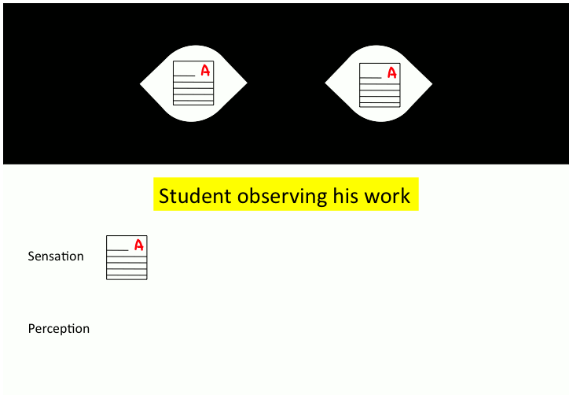
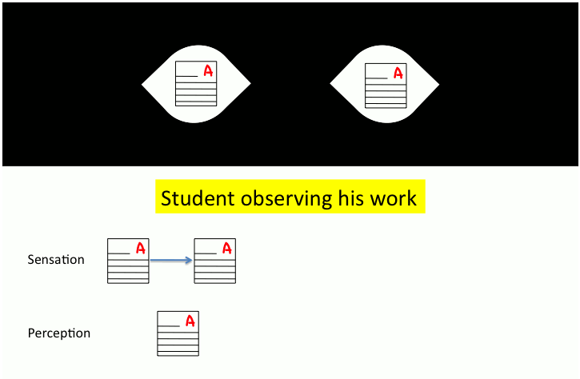
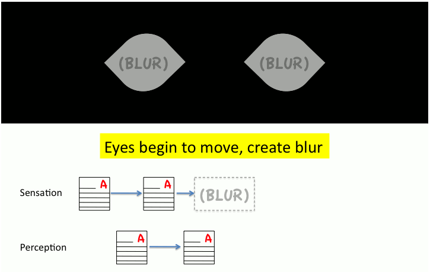
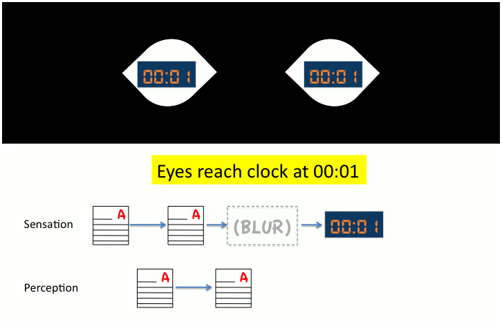
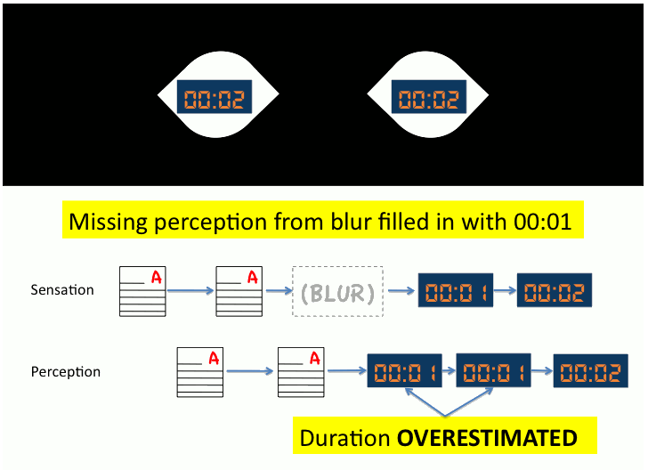

科普短篇（1）
如果小行星撞击地球，我们该怎么办？
作者： 李明涛 - 解放日报
如果小行星和彗星真的撞击地球，除了让地球去“流浪”，我们还能怎么办？科学家们提出了9种应对小行星和彗星撞击的办法。
第一招是躲。如果小行星或彗星的个头太大，而预警的时间又太短，而我们根本没有时间去建造和发射飞行器，那么我们只好躲在地下建筑工事里。惹不起我们还躲不起吗？但是，我们可能真的躲不起。因为世界上哪有那么大的地下工事，能够容纳全球那么多人。而且，即便我们都躲在了地下，如果小行星破坏了地球的气候环境，我们能在地下工事里躲一辈子吗？
第二招是炸。具体的做法是，在小行星的飞行途中引爆核武器，利用核爆产生的高能量射线，蒸发小行星表面的物质，从而改变小行星的轨道。但是，在太空中使用核武器是一个极其敏感的问题，谁知道它有一天会把人类、把地球带向何方。
第三招是撞。也就是利用一个飞行器去高速撞击小行星，瞬间改变小行星的速度，把小行星的轨道撞偏。随着时间的推移，它的轨道会慢慢偏转，从而错过地球。这是目前技术上最成熟、最可行的一种防御方法。
第四招是拖。具体做法是，利用飞行器把小行星整体捕获拖走。显然，这种拖的方法对于大尺寸的小行星是无能为力的。
第五招是牵。也就是让一个飞行器攀升在小行星的前方，通过万有引力，缓慢牵引和改变小行星的轨道。可想而知，利用这种方法改变小行星的轨道，需要比较长的时间。
第六招是烧。利用高能量激光蒸融、气化小行星表面的物质，从而推动小行星改变轨道。不过，人类目前还没有发明出这么强大的激光器。
第七招是喷。利用航天器的电推进发动机，向小行星表面喷射高速离子流，改变小行星的速度。但是，根据牛顿第三定律，在喷气的同时，航天器自身也会发生位移，所以需要在航天器的另一侧再装一组发动机，进行反向喷射，那样的话，会浪费很多燃料，导致效率降低。
最后还有两个脑洞大开的方案。
第八招是涂。就是在小行星的表面涂上一层漆，改变它反射太阳的能力，从而改变小行星的轨道。
第九招是抛，或者叫做扔。它的学名叫做“质量驱动”，说白了就是在小行星上挖土，然后利用电磁弹射机，把土高速扔出去，以改变小行星的轨迹。
停表错觉现象
作者：周不润 - 知乎
停表错觉常常在我们快速转动视线（扫视，saccade）的时候出现，具体表现为扫视之后，第一个看到的画面时间被拉长了。可以感受一下，当我们的视线从一点快速转移到另外一点时，这中间的过程其实是看不清的，但大脑不会让这段模糊不清的影像让我们意识到，不然人就晕了。它一方面要终止这段视觉输入，另一方面也需要想办法把中间这段时间的模糊内容给弥补上，给人创造一种无缝连接的感觉。它弥补的办法就是，用视线转移后第一个看清的影像把之前模糊的那段时间都填补上[1]。例如，抬头看钟的过程花了0.4秒，看到的时间为0分0秒，那么大脑就把0分0秒这个画面填充到扫视过程中消失的那段画面中去，结果就是，其实你看到0分0秒跳到0分1秒的这段过程其实用了1.4秒，而非1秒，这样就会感觉这1秒的时间被拉长了，还有时间让人来怀疑钟是不是停了。再想仔细一点，其实在看到钟之前，你就已经知道时间了，是不是有点诡异……
看图会显得形象一点，比如一个学生正在教室里考试，有时候会停下来看一看时间。
如下图，他的视线现在停留在试卷上，两只眼睛现在看到的是试卷内容。人们通过视觉接受外界信息，再通过视觉皮层整合排序，处理成可以理解的内容。在这张图中，sensation就是视觉信息输入，perception就是视觉信息被处理成我们可以理解的方式。由于接受信息和处理信息本身存在时间差，所以他正看着试卷，但试卷信息还没有被处理。

他继续往下看，之前看到的试卷信息已经被处理了。

这个时候，他想抬头看一下教室前面挂着的电子钟。他的视线正在快速从试卷上转移到钟上，在这个过程中，两眼接受的信息是模糊的（BLUR），大脑不会接受这段模糊的信息，所以sensation虽然接收了，但perception并不处理。

现在他的视线已经转移到电子钟上了，看到了上面的时间是00分01秒--00:01（忽略这个奇怪的时间吧）。sensation已经接受了时间信息， perception已经慌了，本身处理速度就迟了一拍，现在模糊的那段时间又没处理，落后了这么多，这一大段空白该怎么弥补呢？

大脑的决定很坏，没错，就是我们常说的“脑补”。它把刚看到的时间的画面放到原先属于模糊信息的位置，告诉学生说，你刚才那段模糊是不存在的，你刚才看到的就是这个时间！这样，假设学生看钟花了0.4秒，大脑就把这0.4秒的时间也填上00:01这个画面，那学生就在这个画面停留了1.4秒以后才看到00:02的出现。这种时间的拉长让他怀疑钟是不是停了。

Chronostasis错觉的意义在于，为我们保持了世界的连贯性。它不但在视觉中存在，在听觉中也存在。比如有时候打电话的时候，在话筒里听到拨号音，如果把话筒从一个耳朵移到另一个耳朵，或者仅仅是分神之后再把注意力拉回来，有时候就会感觉到拨号音之间的间隔变长了。
由于“脑补”能力的强大，平时很难发现Chronostasis错觉的现象，只有在看到精确记录的仪器（如钟表）时，才能发现这个过程。视线转移距离越长、速度越快，越容易看到。友情提示，看一看就行，不要玩上瘾了，我眼睛已经转疼了……